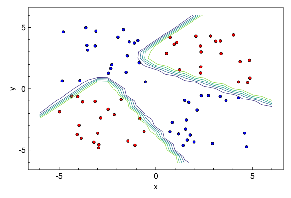
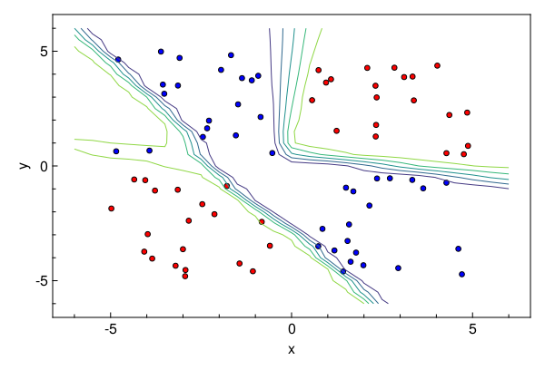

Bayesian Neural Network¤
We borrow this tutorial from the official Turing Docs. We will show how the explicit parameterization of Lux enables first-class composability with packages which expect flattened out parameter vectors.
We will use Turing.jl with Lux.jl to implement implementing a classification algorithm. Lets start by importing the relevant libraries.
# Import libraries
using Lux
using Turing, CairoMakie, Random, ReverseDiff, Functors, MakiePublication
# Hide sampling progress
Turing.setprogress!(false);
# Use reverse_diff due to the number of parameters in neural networks
Turing.setadbackend(:reversediff)
:reversediff
Generating data¤
Our goal here is to use a Bayesian neural network to classify points in an artificial dataset. The code below generates data points arranged in a box-like pattern and displays a graph of the dataset we'll be working with.
# Number of points to generate
N = 80
M = round(Int, N / 4)
rng = Random.default_rng()
Random.seed!(rng, 1234)
# Generate artificial data
x1s = rand(rng, Float32, M) * 4.5f0;
x2s = rand(rng, Float32, M) * 4.5f0;
xt1s = Array([[x1s[i] + 0.5f0; x2s[i] + 0.5f0] for i in 1:M])
x1s = rand(rng, Float32, M) * 4.5f0;
x2s = rand(rng, Float32, M) * 4.5f0;
append!(xt1s, Array([[x1s[i] - 5.0f0; x2s[i] - 5.0f0] for i in 1:M]))
x1s = rand(rng, Float32, M) * 4.5f0;
x2s = rand(rng, Float32, M) * 4.5f0;
xt0s = Array([[x1s[i] + 0.5f0; x2s[i] - 5.0f0] for i in 1:M])
x1s = rand(rng, Float32, M) * 4.5f0;
x2s = rand(rng, Float32, M) * 4.5f0;
append!(xt0s, Array([[x1s[i] - 5.0f0; x2s[i] + 0.5f0] for i in 1:M]))
# Store all the data for later
xs = [xt1s; xt0s]
ts = [ones(2 * M); zeros(2 * M)]
# Plot data points
function plot_data()
x1 = first.(xt1s)
y1 = last.(xt1s)
x2 = first.(xt0s)
y2 = last.(xt0s)
fig = with_theme(theme_web()) do
fig = Figure()
ax = CairoMakie.Axis(fig[1, 1]; xlabel="x", ylabel="y")
scatter!(ax, x1, y1; markersize=8, color=:red, strokecolor=:black, strokewidth=1)
scatter!(ax, x2, y2; markersize=8, color=:blue, strokecolor=:black, strokewidth=1)
return fig
end
return fig
end
plot_data()

Building the Neural Network¤
The next step is to define a feedforward neural network where we express our parameters as distributions, and not single points as with traditional neural networks. For this we will use Dense to define liner layers and compose them via Chain, both are neural network primitives from Lux. The network nn we will create will have two hidden layers with tanh activations and one output layer with sigmoid activation, as shown below.
The nn is an instance that acts as a function and can take data, parameters and current state as inputs and output predictions. We will define distributions on the neural network parameters.
# Construct a neural network using Lux
nn = Chain(Dense(2 => 3, tanh), Dense(3 => 2, tanh), Dense(2 => 1, sigmoid))
# Initialize the model weights and state
ps, st = Lux.setup(rng, nn)
Lux.parameterlength(nn) # number of paraemters in NN
20
The probabilistic model specification below creates a parameters variable, which has IID normal variables. The parameters represents all parameters of our neural net (weights and biases).
# Create a regularization term and a Gaussian prior variance term.
alpha = 0.09
sig = sqrt(1.0 / alpha)
3.3333333333333335
Construct named tuple from a sampled parameter vector. We could also use ComponentArrays here and simply broadcast to avoid doing this. But let's do it this way to avoid dependencies.
function vector_to_parameters(ps_new::AbstractVector, ps::NamedTuple)
@assert length(ps_new) == Lux.parameterlength(ps)
i = 1
function get_ps(x)
z = reshape(view(ps_new, i:(i + length(x) - 1)), size(x))
i += length(x)
return z
end
return fmap(get_ps, ps)
end
# Specify the probabilistic model.
@model function bayes_nn(xs, ts)
global st
# Sample the parameters
nparameters = Lux.parameterlength(nn)
parameters ~ MvNormal(zeros(nparameters), sig .* ones(nparameters))
# Forward NN to make predictions
preds, st = nn(xs, vector_to_parameters(parameters, ps), st)
# Observe each prediction.
for i in 1:length(ts)
ts[i] ~ Bernoulli(preds[i])
end
end
bayes_nn (generic function with 2 methods)
Inference can now be performed by calling sample. We use the HMC sampler here.
# Perform inference.
N = 5000
ch = sample(bayes_nn(reduce(hcat, xs), ts), HMC(0.05, 4), N)
Chains MCMC chain (5000×30×1 Array{Float64, 3}):
Iterations = 1:1:5000
Number of chains = 1
Samples per chain = 5000
Wall duration = 72.32 seconds
Compute duration = 72.32 seconds
parameters = parameters[1], parameters[2], parameters[3], parameters[4], parameters[5], parameters[6], parameters[7], parameters[8], parameters[9], parameters[10], parameters[11], parameters[12], parameters[13], parameters[14], parameters[15], parameters[16], parameters[17], parameters[18], parameters[19], parameters[20]
internals = lp, n_steps, is_accept, acceptance_rate, log_density, hamiltonian_energy, hamiltonian_energy_error, numerical_error, step_size, nom_step_size
Summary Statistics
parameters mean std mcse ess_bulk ess_tail rhat ⋯
Symbol Float64 Float64 Float64 Float64 Float64 Float64 ⋯
parameters[1] -2.0521 0.7625 0.1721 20.6080 90.3161 1.0078 ⋯
parameters[2] -3.0083 3.1557 0.9621 12.7726 21.0999 1.5426 ⋯
parameters[3] 1.3245 0.8417 0.2430 13.3461 24.3246 1.4587 ⋯
parameters[4] -1.4877 1.0772 0.2493 15.1287 26.2870 1.1494 ⋯
parameters[5] 0.7760 0.5463 0.1115 27.1685 102.1179 1.2247 ⋯
parameters[6] 3.4906 1.7171 0.4559 14.8031 45.0051 1.0628 ⋯
parameters[7] -3.9710 1.4956 0.3945 15.0640 45.7012 1.1078 ⋯
parameters[8] -3.4420 1.3931 0.3730 14.6316 21.0172 1.4495 ⋯
parameters[9] -4.5405 3.0887 0.9352 12.0159 20.0739 1.6221 ⋯
parameters[10] -3.2319 2.7507 0.8110 12.1252 22.4200 1.3478 ⋯
parameters[11] -3.5758 1.4822 0.4076 13.6637 33.8975 1.1729 ⋯
parameters[12] -1.0570 2.4954 0.7492 11.7223 21.0856 1.9121 ⋯
parameters[13] 2.9443 1.5863 0.4630 12.8882 20.7551 1.4709 ⋯
parameters[14] 1.7753 3.9004 1.1683 11.7170 20.8646 1.4595 ⋯
parameters[15] -2.5492 0.9557 0.2088 22.5673 38.5675 1.1274 ⋯
parameters[16] 1.3716 2.0800 0.5691 14.0441 34.5833 1.1682 ⋯
parameters[17] -0.4643 1.9644 0.5871 11.5634 21.2536 1.8976 ⋯
⋮ ⋮ ⋮ ⋮ ⋮ ⋮ ⋮ ⋱
1 column and 3 rows omitted
Quantiles
parameters 2.5% 25.0% 50.0% 75.0% 97.5%
Symbol Float64 Float64 Float64 Float64 Float64
parameters[1] -3.3949 -2.6340 -2.0720 -1.4720 -0.6806
parameters[2] -10.8256 -4.7942 -1.1807 -0.8554 -0.4700
parameters[3] 0.2152 0.6476 1.1033 1.9170 3.1882
parameters[4] -5.7669 -1.7303 -1.3366 -0.9107 -0.3575
parameters[5] -0.4868 0.5344 0.8637 1.1188 1.7370
parameters[6] 0.6259 2.2367 3.5342 4.5333 6.7872
parameters[7] -6.6437 -5.1932 -3.9708 -2.7398 -1.3800
parameters[8] -5.8277 -4.4686 -3.5359 -2.5644 -0.2680
parameters[9] -11.4662 -7.0356 -3.2984 -2.0051 -0.8413
parameters[10] -8.1245 -4.8659 -3.5562 -1.3859 2.0080
parameters[11] -6.4989 -4.7170 -3.5606 -2.3902 -1.0114
parameters[12] -4.6375 -3.1774 -1.3213 0.7895 4.0594
parameters[13] 0.8759 1.7717 2.6272 3.5623 6.9655
parameters[14] -5.8894 -2.1307 3.2297 4.9656 7.0390
parameters[15] -4.6926 -3.0672 -2.5009 -1.9073 -0.9006
parameters[16] -2.5810 -0.0622 0.9090 2.9472 5.4754
parameters[17] -3.6208 -2.0939 -0.6436 1.0709 3.5339
⋮ ⋮ ⋮ ⋮ ⋮ ⋮
3 rows omitted
Now we extract the parameter samples from the sampled chain as θ (this is of size 5000 x 20 where 5000 is the number of iterations and 20 is the number of parameters). We'll use these primarily to determine how good our model's classifier is.
# Extract all weight and bias parameters.
θ = MCMCChains.group(ch, :parameters).value;
Prediction Visualization¤
# A helper to run the nn through data `x` using parameters `θ`
nn_forward(x, θ) = first(nn(x, vector_to_parameters(θ, ps), st))
# Plot the data we have.
fig = plot_data()
# Find the index that provided the highest log posterior in the chain.
_, i = findmax(ch[:lp])
# Extract the max row value from i.
i = i.I[1]
# Plot the posterior distribution with a contour plot
x1_range = collect(range(-6; stop=6, length=25))
x2_range = collect(range(-6; stop=6, length=25))
Z = [nn_forward([x1, x2], θ[i, :])[1] for x1 in x1_range, x2 in x2_range]
contour!(x1_range, x2_range, Z)
fig

The contour plot above shows that the MAP method is not too bad at classifying our data. Now we can visualize our predictions.
The nn_predict function takes the average predicted value from a network parameterized by weights drawn from the MCMC chain.
# Return the average predicted value across multiple weights.
nn_predict(x, θ, num) = mean([first(nn_forward(x, view(θ, i, :))) for i in 1:10:num])
nn_predict (generic function with 1 method)
Next, we use the nn_predict function to predict the value at a sample of points where the x1 and x2 coordinates range between -6 and 6. As we can see below, we still have a satisfactory fit to our data, and more importantly, we can also see where the neural network is uncertain about its predictions much easier–-those regions between cluster boundaries.
Plot the average prediction.
fig = plot_data()
n_end = 1500
x1_range = collect(range(-6; stop=6, length=25))
x2_range = collect(range(-6; stop=6, length=25))
Z = [nn_predict([x1, x2], θ, n_end)[1] for x1 in x1_range, x2 in x2_range]
contour!(x1_range, x2_range, Z)
fig

Suppose we are interested in how the predictive power of our Bayesian neural network evolved between samples. In that case, the following graph displays an animation of the contour plot generated from the network weights in samples 1 to 1,000.
# Number of iterations to plot.
n_end = 1000
fig = plot_data()
Z = [first(nn_forward([x1, x2], θ[1, :])) for x1 in x1_range, x2 in x2_range]
c = contour!(x1_range, x2_range, Z)
fig

Plotting the Final contour
fig = plot_data()
Z = [first(nn_forward([x1, x2], θ[n_end, :])) for x1 in x1_range, x2 in x2_range]
c = contour!(x1_range, x2_range, Z)
fig

This page was generated using Literate.jl.